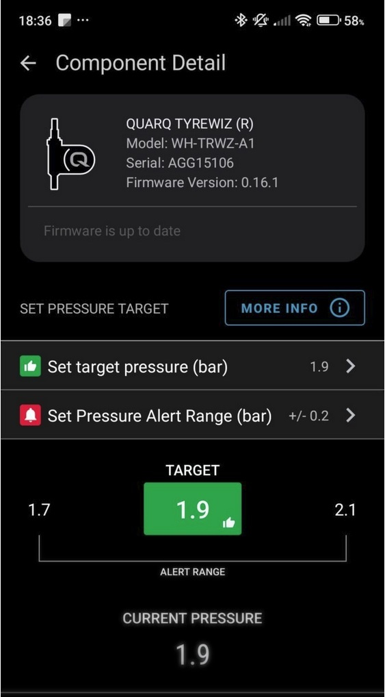

- Install TubeWitch from Connect IQ.
- Fully reboot the Garmin device and restart the Connect IQ app.
- Open TubeWitch settings and enter the numeric part of each sensor ID.
- Add TubeWitch to a data page, start an activity, and rotate the wheels.
- Confirm live pressure appears before ride use.
First ride setup
Get from install to live pressure in one session
TubeWitch setup is for riders who already own Quarq TyreWiz 1.0 or 2.0 sensors, Quarq TyreWiz for Moto sensors, or Zipp 303 SW wheels and want that tire pressure data on a Garmin device. TubeWitch stores the sensor IDs and display behavior, while the SRAM app still controls the target pressure on the sensors themselves.
TubeWitch setup centers on sensor ID entry, device restart, adding the field to a data screen, and confirming live pressure from both wheels before the ride.

Quick setup checklist
Two separate jobs
What goes in TubeWitch vs. what stays in SRAM
- TubeWitch stores the numeric sensor IDs, active sensor set, labels, timeout behavior, and alerts.
- The SRAM mobile app is still where target pressure is defined for the sensors.
- If live pressure appears but high/low status looks wrong, check the pressure target in SRAM first.
- For multiple bikes or wheelsets, clear set names help distinguish configurations before using Auto mode.

If one or both sensors do not connect
Reboot again
After first install or after sensor changes, a full Garmin reboot solves more startup issues than partial retries.
Acknowledge open connection prompts
The message about a sensor using an open connection is expected during initial setup and often appears once per sensor.
Remove competing data fields
If another TyreWiz data field is installed, it will block TubeWitch from reading the sensors. Uninstall the other field and reboot.
The FAQ page covers compatibility, sensor ID entry, and pressure target questions. The Alerts page covers popup, tone, vibration, and timing behavior. For the focused product overview, see SRAM/Quarq TyreWiz on Garmin.